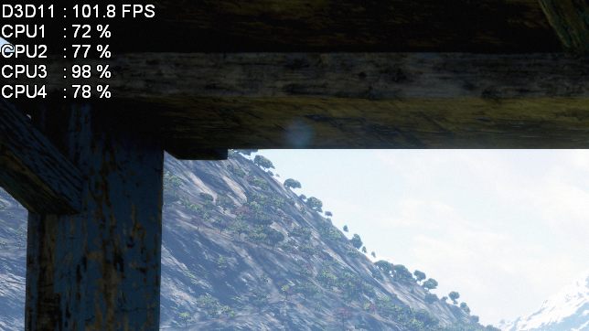
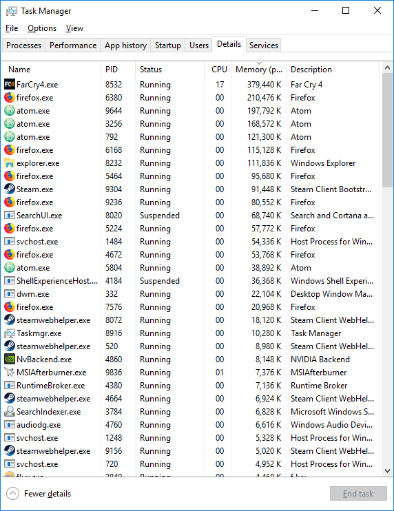
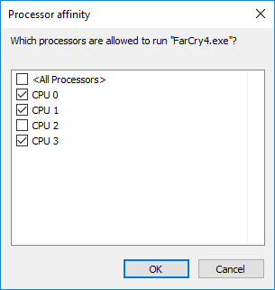
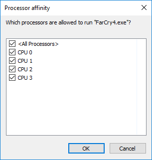
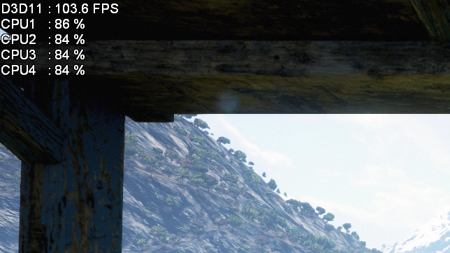

FarCry 4 CPU Usage fix

Introduction
Stuttering has been prevalent in my experience of the FarCry games, specifically FarCry 3, FarCry 3 Blood Dragon and FarCry 4. I'm going to take a look at the three FarCry games in turn and study what benefits to performance this fix has, and how they are perceived.
The Manual Fix
I'll use FarCry 4 for the following example, but the steps are exactly the same for the other two games. Through gameplay the utilization of CPU3 oscillates between 95% and 100%.
Simply Alt+Tab out of the game at any point and bring up task manager. Head over to the Details tab and arrange the processes by Memory from high to low (Games will always be at the top of the list this way).
Right-click the game in question (in this case FarCry4.exe) and select "Set affinity"
Untick CPU 2 (Core 3) and hit OK
Right-click the game and select "Set affinity" once again, tick CPU 2 and click OK
Yes, we just unticked CPU 2 and ticked it again. Going back into the game we find that Core 3 is no longer maxed out as shown, but the usage of the other three cores increases.
